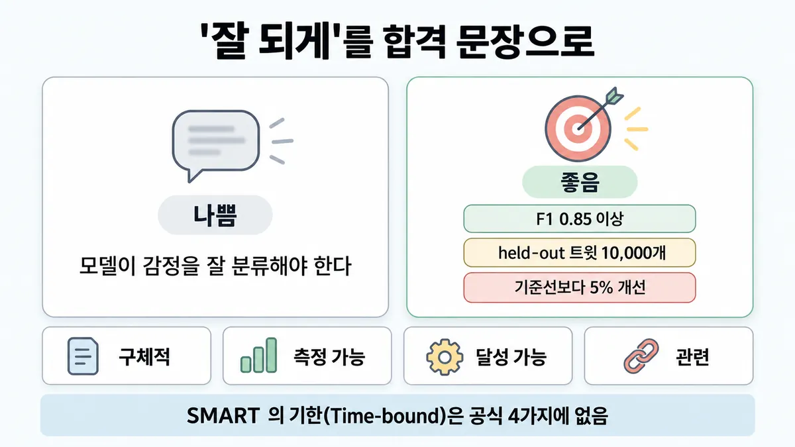
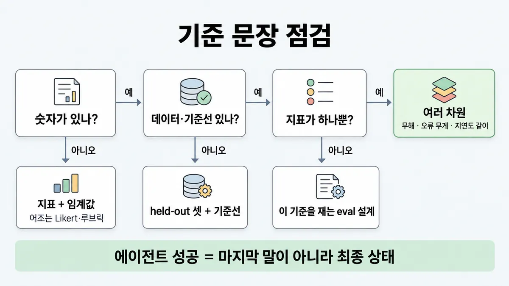

■ 성공 기준
표시가 없는 문장은 공식 문서에서 확인한 내용이에요. 다른 표시는 읽는 법
왜 배우나 — 시험이 요구하는 것
시험 목표 4.1 평가 지표 정하기 · D4 평가 16%Define evaluation metrics (accuracy, latency, cost, safety, security)
이 개념으로 푸는 판단 (할 수 있어야 하는 것)
- 4.1① "감정 분류를 잘하게" — 성공 기준을 어떻게 적나? — 모호한 목표를 측정 가능한 성공 기준으로 바꾸기
- 1.1② "챗봇 넣자" 는 요청, 무엇부터 적나? — 해법보다 결과·범위·성공 기준을 먼저 정하기
- 6.1② 성공 기준을 어떻게 적나 — SMART 로? 숫자 하나로? — 성공 기준의 요건 (Anthropic 4가지 + 여러 차원)
한눈에
"잘 되게"를 합격·불합격이 갈리는 문장으로 바꾼 것. 좋은 성공 기준(success criteria) = 구체적 · 측정 가능 · 달성 가능 · 관련 4가지
한 문장에 지표 + 임계값 + 잴 데이터(held-out 테스트 셋) + 기준선 대비를 넣고, 대부분 여러 차원을 같이 기준으로 걺. 공식 순서 = 성공 기준 먼저, 그 기준을 재는 eval 은 그다음
비유 SLO 문서. "빠르게"가 아니라 "이 엔드포인트, 요청 95% 가 200ms 미만". 가용성 하나로 "성공"이라 안 하고 오류율·지연(latency)을 같이 기준으로 걺


ELI5
달리기 시합에서 "잘 달려"라고만 하면 누가 이겼는지 못 정해요.
- "100m 를 15초 안에"처럼 숫자로 정해야 해요.
- 어느 운동장에서 잴지도 미리 정해요.
- 달리기만 보지 않고, 넘어지지 않았는지도 같이 봐요.
- 지금 다리로 닿을 수 있는 기록이어야 해요.
개념 설명
원리
왜 기준이 먼저인가
- 기준이 없으면 프롬프트를 고친 뒤 "좋아졌나"를 판정할 수 없음. 공식 순서 = 성공 기준(success criteria) 정의 → 그 기준을 재는 eval 설계 → 고치고 다시 측정.
- 늦게 정하면 운영(production) 중인 시스템에서 기준을 거꾸로 캐내야 함. 초기에 eval 을 쓰면 팀이 "성공이 뭔지"를 글로 적게 됨.
좋은 기준 4가지 — 각각이 막는 실패
- 구체적 : 무엇을 잘해야 하는지 흐림 → "좋은 성능"이 아니라 "정확한 감정 분류".
- 측정 가능 : 판정 불가 → 숫자, 또는 일관되게 쓰는 정성 척도(Likert · 루브릭). 안전·윤리도 숫자로.
- 달성 가능 : 영원히 불합격인 목표 → 벤치마크 · 이전 실험 · 연구 · 전문가 지식에 기댐.
- 관련 : 쓸모없는 지표를 올리는 일 → 앱 목적과 사용자 요구에 맞춤.
- 공식은 이 4가지뿐. 'SMART' 의 기한은 없음.
기준 문장의 조각 (공식 예)
- 지표 F1 · 임계값 0.85 이상 · 데이터 = held-out 트윗 10,000개 · 기준선 = 지금보다 5% 개선.
- held-out 셋 = 고칠 때 안 본 셋. 고칠 때 보던 셋으로만 재면 그 셋에 맞춘 개선(과적합)을 진짜 개선으로 착각함.
- 기준선이 있어야 "개선"인지 "그대로"인지 가릴 수 있음.
여러 차원
- 대부분 한 숫자로 안 끝남. 정확도를 올리다 안전·지연(latency)·비용이 나빠지면 한 숫자만 보는 기준은 그걸 못 봄.
- 오류도 무게가 다름 : 공식 예는 "오류의 90% 는 큰 오류가 아닌 불편 수준"을 따로 기준으로 걺 → 오류 심각도도 기준이 됨.
- 운영 지표(응답 시간 ms · 가동률 %)도 성공 기준의 차원.
에이전트
- 에이전트는 말로 끝나지 않음. 성공 = 시도가 끝난 뒤 환경의 최종 상태(outcome).
- 실행마다 결과가 달라서 한 번 돌려 보고 판정하지 않음 → pass@k · pass^k.
핵심 질문 두 개
- 이 문장만 보고 기계가 합격·불합격을 가를 수 있나?
- 이 숫자 하나만 좋아지고 다른 게 나빠지면, 기준이 그걸 잡나?
규칙과 판단


갈림길
①② 기준 문장 고치기 [4.1①]
지표 + 임계값
나쁨 = "모델이 감정을 잘 분류해야 한다" → 좋음 = F1 0.85 이상(측정 가능·구체적)
숫자로
"안전한 출력"(나쁨) → 10,000회 중 콘텐츠 필터 유해 플래그 0.1% 미만(좋음)
잘 정의된 정성 척도
Likert 1~5 · 전문가 루브릭. 정성은 정량과 함께 일관되게 쓸 때 가치 있음
셋·기준선 붙임
held-out 테스트 셋(다양한 트윗 10,000개) + 지금 기준선보다 5% 개선
공식 4가지에 없음
SMART 의 기한(Time-bound)은 공식 4가지에 없음
다음 물음 — 지표가 하나뿐?
③④ 차원 점검 [4.1①] [1.6②]
여러 차원
F1 0.85 이상 + 출력 99.5% 무해 + 오류의 90% 는 불편 수준 + 응답 95% 가 200ms 미만
달성 가능하게
업계 벤치마크 · 이전 실험 · AI 연구 · 전문가 지식에 기댐
관련 있게
인용 정확도는 의료 앱엔 중요, 일상 챗봇엔 덜
eval 설계로
이 기준을 재는 eval 을 설계 → ■ 첫 eval 셋 만들기
⑤ 에이전트면 [4.1①] [4.1③]
결과로
성공 = 시도가 끝난 뒤 환경의 최종 상태. "예약됐어요"라고 말해도 DB 에 예약이 있어야
여러 번 시도
규칙 원문 ①②③④⑤ (갈림길로 그린 규칙)
-
4가지 [4.1①]
- 구체적(Specific) : "좋은 성능" 대신 "정확한 감정 분류"
- 측정 가능(Measurable) : 정량 지표 또는 잘 정의된 정성 척도. 정성은 정량과 함께 일관되게 쓸 때 가치. 윤리·안전 같은 모호한 주제도 숫자로 : "안전한 출력"(나쁨) → 10,000회 중 콘텐츠 필터 유해 플래그 0.1% 미만(좋음)
- 달성 가능(Achievable) : 업계 벤치마크 · 이전 실험 · AI 연구 · 전문가 지식에 기댐. 현재 프런티어 모델 역량에 비해 비현실이면 안 됨
- 관련(Relevant) : 앱 목적·사용자 요구에 맞춤. 인용 정확도는 의료 앱엔 중요, 일상 챗봇엔 덜
SMART 의 기한(Time-bound)은 공식 4가지에 없음
-
한 문장 조립 (공식 감정 분석 예) [4.1①]
나쁨 = "모델이 감정을 잘 분류해야 한다"
좋음 = F1 0.85 이상(측정 가능·구체적) · held-out 테스트 셋, 다양한 트윗 10,000개(관련) · 지금 기준선보다 5% 개선(달성 가능)
held-out 셋 = 고칠 때 안 본 셋 → "훈련용" eval 에 과적합했는지 가려냄
재는 수단 예 : 과제별 F1 · BLEU · perplexity / 일반 정확도 · 정밀도 · 재현율 / 운영 응답 시간(ms) · 가동률(%) / A/B(기준 모델·이전 판과 비교) · 엣지 케이스 무오류 처리 비율 / Likert 척도 · 전문가 루브릭
-
여러 차원 : 대부분 여러 성공 기준으로 다차원 평가 [4.1①] [1.6②]
공식 예 (held-out 트윗 10,000개) = F1 0.85 이상 + 출력 99.5% 무해 + 오류의 90% 는 큰 오류가 아닌 불편 수준 + 응답 95% 가 200ms 미만. "불편"·"큰 오류"의 뜻도 따로 정의해야
흔한 기준(공식, 전부 아님) = 과제 충실도(드물고 어려운 입력 포함) · 일관성 · 관련성·논리 · 톤·스타일 · 개인정보 보호 · 맥락 활용 · 지연 · 가격
가이드 목표 4.1 의 차원 = 정확도 · 지연 · 비용 · 안전 · 보안. 보안(인젝션 성공률 같은 것)을 재는 법은 공식 목록에 없음 업계 일반
고객지원 목표치 = ■ impact metrics · 지연 차원 = ◆ TTFT vs 응답 완료 지연 · 가격 차원 = ■ per-request cost
-
에이전트면 : 과제(task) = 입력과 성공 기준이 정해진 테스트 하나 [4.1①] [4.1③]
성공 = 말이 아니라 결과(outcome) — 시도가 끝난 뒤 환경의 최종 상태. "예약됐어요"라고 말해도 DB 에 예약이 있어야
대화형 에이전트도 여러 차원 : 티켓 해결(상태 확인) · 10턴 미만(기록 제약) · 어조(LLM 루브릭)
실행마다 결과가 달라서 여러 번 시도 → ◆ pass@k vs pass^k
더 깊이 : 판단 규칙 · 상황 변수 (설명)
판단 규칙
| 조건 | 답 | 근거 |
|---|---|---|
| 목표가 "잘 되게" · "좋은 성능" 같은 말 | 구체적 과제 + 숫자 지표로 바꿈 | define-success en-full (Specific — "good performance" 대신 "accurate sentiment classification") |
| 안전·윤리처럼 모호한 차원 | 숫자로 : 10,000회 중 유해 플래그 0.1% 미만 | define-success en-full |
| 어조·공감처럼 주관적 차원 | 잘 정의된 정성 척도(Likert · 전문가 루브릭), 정량과 함께 | define-success en-full |
| 기준 문장을 쓸 때 | 지표 + 임계값 + held-out 셋 + 기준선 대비 | define-success en-full |
| 지표를 하나만 걸려 함 | 여러 차원 (정확도 · 안전 · 오류 심각도 · 지연 …) | define-success en-full "Most use cases need multidimensional evaluation along several success criteria." |
| 목표치를 어디서 정하나 | 업계 벤치마크 · 이전 실험 · AI 연구 · 전문가 지식, 프런티어 역량 안에서 | define-success en-full |
| 어떤 차원을 넣을지 모름 | 흔한 기준 목록에서 : 과제 충실도 · 일관성 · 관련성·논리 · 톤·스타일 · 개인정보 · 맥락 활용 · 지연 · 가격 | define-success en-full (목록은 전부 아님) |
| 에이전트 과제의 성공 판정 | 환경 최종 상태(outcome), 마지막 말이 아님 | demystifying-evals |
| 대화형 에이전트 | 상태 확인 + 턴 수 제약 + 어조 루브릭을 같이 | demystifying-evals |
| 언제 정하나 | 만들기 전에 | define-success en-full · demystifying-evals |
상황 변수
| 변수 | 값 | 답 쪽 | 등급 | 근거 |
|---|---|---|---|---|
| 차원의 성격 | 정답이 뚜렷함(분류) | 정량 지표(정확도 · F1) | define-success en-full | |
| 차원의 성격 | 주관적(어조 · 공감) | Likert · 루브릭, 정량과 함께 | define-success en-full | |
| 차원의 성격 | 모호한 안전·윤리 | 비율 숫자 + 시행 횟수 | define-success en-full | |
| 앱 목적 | 의료 | 인용 정확도가 중요 | define-success en-full | |
| 앱 목적 | 일상 챗봇 | 인용 정확도는 덜 중요 | define-success en-full | |
| 기준선 | 있음 | "기준선보다 N% 개선" | define-success en-full | |
| 기준선 | 없음(새 제품) | 벤치마크 · 이전 실험 · 전문가 지식으로 절대 목표 | define-success en-full · 뒤집히는 때 3 | |
| 과제 종류 | 맥락에 넣어 준 회사·상품 정보 · 견적 | 100% 가 공식 목표 | customer-support-chat-full · 뒤집히는 때 1 | |
| 과제 종류 | 자동 해결률처럼 문의 복잡성에 좌우 | 100% 아님 (deflection 70~80%) | ■ impact metrics | |
| 시스템 모양 | 에이전트(도구·상태 변경) | 결과(환경 상태) + 여러 번 시도 | demystifying-evals | |
| 차원 | 보안(인젝션 등) | 가이드는 차원으로 듦, 재는 법은 공식 목록에 없음 | 업계 일반 | 미해결 1 |
연습 문제
고객지원 Agent 의 합격 기준 초안은 "held-out 문의 5,000건에서 문의 분류 F1 0.85 이상지표 하나, 지금 기준선보다 5% 개선" 한 줄뿐이다. 팀장은 기한(Time-bound)이 빠졌다며 SMART 로 고치자고 한다. 기준에 무엇을 더할까?
시험 대비
함정
- "모델이 감정을 잘 분류해야 한다" 같은 말 기준 → 숫자 · 데이터 · 기준선 없음
- "안전한 출력" → 10,000회 중 0.1% 미만처럼 숫자로
- 정확도 하나만 기준으로 걺 → 대부분 여러 차원
- 'SMART' 로 외워 기한(Time-bound)을 찾음 → 공식은 4가지
- 현재 프런티어 모델로 닿지 않는 목표 → 달성 가능해야
- "어조는 주관적이라 못 잰다" → Likert · 루브릭 같은 잘 정의된 정성 척도, 정량과 함께
- 오류 비율만 걸고 오류의 무게는 안 봄 → 공식 예는 "오류의 90% 는 불편 수준"처럼 심각도도 기준
- 고칠 때 보던 셋으로 합격 판정 → held-out 셋
- 에이전트의 마지막 말("완료했습니다")로 성공 판정 → 환경 최종 상태
신호
"Building a successful LLM-based application starts with clearly defining your success criteria and then designing evaluations to measure performance against them."
"Use quantitative metrics or well-defined qualitative scales."
"Less than 0.1% of outputs out of 10,000 trials flagged for toxicity by the content filter."
"Your success metrics should not be unrealistic to current frontier model capabilities."
"Most use cases need multidimensional evaluation along several success criteria."
"The sentiment analysis model should achieve an F1 score of at least 0.85 (Measurable, Specific) on a held-out test set"
"which is a 5% improvement over the current baseline (Achievable)."
"A flight-booking agent might say “Your flight has been booked” at the end of the transcript, but the outcome is whether a reservation exists in the environment’s SQL database."
더 깊이 : 뒤집히는 때 · 오답 재료 (설명)
뒤집히는 때
1. "100% 목표는 비현실이라 오답" 이 틀리는 때
- 조건 : 과제가 좁은 사실 전달 — 맥락에 넣어 준 회사·상품 정보를 그대로 말하기, 견적을 맞게 내기.
- 판단 : 공식 고객지원 가이드는 이 두 칸에 100% 정확도를 목표로 둠. 답이 맥락 안에 다 있어 프런티어 역량 밖이 아님. "달성 가능"은 "100% 금지"가 아니라 "과제에 비춰 현실적"이라는 뜻.
- 근거 : customer-support-chat-full · define-success en-full
- 대조 : 문의 복잡성에 좌우되는 자동 해결률(deflection)은 70~80% 가 공식 목표 → 100% 는 오답 (■ impact metrics).
2. 시행 횟수가 작으면 0.1% 기준은 못 잰다
- 조건 : 유해 출력 0.1% 미만을 기준으로 걸었는데 시험 셋이 800회.
- 계산 : 0.1% × 800 = 0.8개. 1개만 나와도 1 ÷ 800 = 0.125% → 불합격, 0개면 합격. 합격 여부가 출력 1개에 달림. 공식 예처럼 10,000회면 0.1% = 10개까지 허용 → 1~2개 차이로 판정이 뒤집히지 않음.
- 전제 : 시행이 서로 독립 · 콘텐츠 필터 판정은 고정.
- 등급 : 계산 (0.1%·10,000회는 확인). "공식 예가 시행 횟수를 같이 적은 이유가 이것"은 추론.
- 근거 : define-success en-full
- 처방 : 드문 사건을 비율로 걸 땐 시행 횟수도 기준 문장에 넣음.
3. 기준선이 없는 새 제품
- 조건 : 처음 만드는 분류기라 "지금 기준선"이 없음.
- 판단 : "기준선보다 5% 개선"을 쓸 수 없음 → 달성 가능 근거를 업계 벤치마크 · 이전 실험 · AI 연구 · 전문가 지식에서 가져와 절대 목표로. 첫 판이 나오면 그것이 다음 판의 기준선이 됨.
- 등급 : (근거 4가지) · 업계 일반("첫 판이 기준선")
- 근거 : define-success en-full · demystifying-evals ("you get baselines and regression tests for free")
4. 여러 차원이 서로 부딪칠 때
- 조건 : 기준 = F1 0.9 이상 + 응답 95% 300ms 미만. 더 큰 모델로 F1 0.92 가 됐지만 95번째 응답 시간이 450ms.
- 판단 : 한 차원만 통과 = 불합격. 여러 차원을 건 이유가 바로 이 충돌을 드러내는 것. 다음 수는 지연 lever(손잡이 — ■ 지연 줄이기 lever)로 지연 차원을 되찾거나, 기준 자체를 다시 협의.
- 등급 : (다차원) · 업계 일반(충돌 처리 순서)
- 근거 : define-success en-full
오답 재료
| 오답 | 왜 끌리나 | 왜 틀리나 | 근거 |
|---|---|---|---|
| "모델이 감정을 잘 분류해야 한다" | 목표가 분명해 보임 | 숫자 · 데이터 · 기준선 없음 → 판정 불가. 공식이 든 '나쁨' 예 그대로 | define-success en-full |
| "안전한 출력을 낸다" | 안전은 숫자로 못 잴 것 같음 | 공식 '나쁨' 예. 10,000회 중 0.1% 미만처럼 숫자로 | define-success en-full |
| 정확도(F1) 하나만 건 기준 | 가장 중요한 숫자 하나면 충분해 보임 | 대부분 다차원. 공식 좋은 예는 F1 + 무해 + 오류 심각도 + 지연 | define-success en-full |
| 'SMART' 5요소, 기한(Time-bound)을 찾는 보기 | 흔히 외우는 목표 틀 | 공식은 4가지(구체적 · 측정 가능 · 달성 가능 · 관련) | define-success en-full |
| "어조는 주관적이라 사람이 전부 채점" | 주관적 = 사람 | 잘 정의된 정성 척도로 측정. 채점 수단 고르기는 ■ grader 고르기 | define-success en-full |
| "정확도 99.99% 를 목표로" | 높을수록 좋아 보임 | 프런티어 역량에 비해 비현실이면 안 됨 | define-success en-full |
| "100% 목표는 늘 오답" | 달성 가능을 과하게 외움 | 맥락 정보 · 견적 정확도는 공식 목표 100% | 뒤집히는 때 1 |
| 에이전트가 "완료"라고 답했으니 성공 | 말이 곧 결과 같음 | 성공은 환경 최종 상태 | demystifying-evals |
| "기준은 운영하면서 정한다" | 빨리 내보내고 싶음 | 만들기 전에. 늦으면 운영 중 시스템에서 거꾸로 캐냄 | demystifying-evals |
참고
출처
- 가이드 목표 4.1 공식 시험 가이드 v1.0
- define-success (en-full)
- demystifying-evals
- writing-tools-for-agents
상태
- 업계 일반 1줄(보안 차원 재는 법)
미해결
- 보안 차원 : 가이드 목표 4.1 은 security 를 지표 차원으로 들지만, define-success 의 흔한 기준 목록엔 보안 항목이 없음(가까운 건 개인정보 보호). 인젝션 성공률 같은 보안 지표는 업계 일반 — 목록도 "(근거 확인 필요 — Anthropic 문서 없음)" 으로 표시해 둠.
- "5% improvement over the current baseline" 이 상대(0.85 ÷ 1.05 ≈ 기준선 0.81)인지 절대(0.85 − 0.05 = 기준선 0.80)인지 공식 문장에 없음. 시험에 숫자로 나오면 지문 표현을 따름(추론).
- 한국어판 define-success(ko)는 예시 아코디언(감정 분석 좋은/나쁜 예 · 지표 예 · 흔한 기준 설명)이 빠져 있음 → 카드의 예시·지표 목록은 영어 full 판(en-full)으로만 확인.
- 목록 4.1① 의 두 영어 신호("Most use cases need…" · "Less than 0.1%…")는 원문에서 찾음(en-full). 목록의 "held-out 데이터셋 · 기준선" 도 en-full에서 확인.